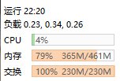

前言
如何在一个廉价的OpenStick随身WiFi上面运行一个MCPE 0.14的怀旧服务器。
一个几十块钱的随身WiFi设备，刷上Linux系统后，居然能跑起一个Minecraft服务器。这篇文章记录了整个折腾过程。
硬件准备
- OpenStick随身WiFi - 基于MSM8916芯片的版本，几块钱就能买到
- 电脑 - 用于刷机和SSH连接
- USB数据线 - 连接随身WiFi和电脑
系统刷机
首先需要把随身WiFi刷成Debian系统。这一步比较复杂，需要拆机短接测试点进入9008模式，然后使用QPST工具刷入固件。
刷机教程参考：CSDN - OpenStick刷机教程
ssh root@192.168.1.3
# 默认密码: 1313144配置Swap交换空间
OpenStick只有461MB内存，跑MC服务器很紧张。第一步就是配置Swap交换空间，把一部分存储当虚拟内存用。
创建Swap文件（230MB）：
dd if=/dev/zero of=/swapfile bs=1M count=230
chmod 600 /swapfile格式化并启用Swap：
mkswap /swapfile
swapon /swapfile设置开机自动挂载：
echo '/swapfile none swap sw 0 0' >> /etc/fstab调整Swap使用倾向（让系统更积极使用Swap）：
echo 'vm.swappiness=60' >> /etc/sysctl.conf
sysctl -p验证Swap是否生效：
free -h应该能看到Swap有230MB可用。
安装编译依赖
Genisys服务器需要PHP 7.0 ZTS版本，系统自带的PHP版本不对，需要从源码编译。先安装编译所需的各种依赖包：
apt update
apt install -y build-essential autoconf pkg-config \
libxml2-dev libsqlite3-dev libcurl4-openssl-dev \
libssl-dev libgmp-dev libzip-dev libpng-dev \
libonig-dev libjpeg-dev libfreetype-dev编译PHP 7.0 ZTS
这是整个过程中最耗时的一步。在OpenStick的ARM处理器上编译PHP大约需要30-40分钟。
pthreads扩展，这个扩展只兼容PHP 7.0-7.2，更高版本的PHP API不兼容。所以必须编译PHP 7.0.33 ZTS。
下载PHP 7.0.33源码并解压：
cd /root
wget https://www.php.net/distributions/php-7.0.33.tar.gz
tar xzf php-7.0.33.tar.gz配置编译选项（注意--enable-maintainer-zts是关键）：
cd php-7.0.33
./configure \
--prefix=/root/php70-zts \
--enable-maintainer-zts \
--enable-mbstring \
--enable-sockets \
--with-curl \
--with-openssl \
--with-zlib \
--with-gmp \
--with-sqlite3 \
--enable-phar \
--enable-xml \
--enable-dom \
--disable-cgi \
--disable-phpdbg \
--enable-cli \
--disable-opcache \
--disable-fileinfo \
--without-pear \
CFLAGS="-O1"编译并安装（-j1单线程编译避免OOM）：
make -j1
make install这一步大约需要30-40分钟，耐心等待。如果用-j2可能会因为内存不足被OOM Killer杀掉进程。
编译PHP扩展
Genisys需要三个额外的PHP扩展：pthreads（多线程）、yaml（配置解析）、bcmath（大数运算）。
编译pthreads扩展（版本3.1.6，兼容PHP 7.0）：
cd /root
wget https://github.com/krakjoe/pthreads/archive/refs/tags/v3.1.6.zip
unzip v3.1.6.zip
cd pthreads-3.1.6
/root/php70-zts/bin/phpize
./configure --with-php-config=/root/php70-zts/bin/php-config
make -j1
make install编译yaml扩展（版本2.1.0，兼容PHP 7.0）：
cd /root
wget https://pecl.php.net/get/yaml-2.1.0.tgz
tar xzf yaml-2.1.0.tgz
cd yaml-2.1.0
/root/php70-zts/bin/phpize
./configure --with-php-config=/root/php70-zts/bin/php-config
make -j1
make install编译bcmath扩展（使用PHP源码自带的扩展）：
cd /root/php-7.0.33/ext/bcmath
/root/php70-zts/bin/phpize
./configure --with-php-config=/root/php70-zts/bin/php-config
make -j1
make install创建php.ini，让PHP启动时自动加载这些扩展：
cat > /root/php70-zts/lib/php.ini << 'EOF'
extension=pthreads.so
extension=yaml.so
extension=bcmath.so
EOF部署Genisys服务器
PHP环境准备好后，就可以部署Genisys服务器了。Genisys是PocketMine-MP的一个分支，专门为MCPE 0.14设计。
下载开服包并解压（或者使用本文底部的一键开服包）：
mkdir -p /root/server/plugins
cd /root/server
# 将PocketMine-MP.phar和插件文件放到对应目录启动服务器：
cd /root/server
/root/php70-zts/bin/php PocketMine-MP.phar --no-wizard第一次启动会自动生成世界和配置文件，大约需要10-20秒。
后台运行服务器（关闭SSH后服务器继续运行）：
nohup /root/php70-zts/bin/php PocketMine-MP.phar --no-wizard > server.log 2>&1 &服务器性能实测
在OpenStick上运行MCPE 0.14服务器的实际性能表现：

服务器运行时的系统监控面板
| 指标 | 数值 | 说明 |
|---|---|---|
| CPU使用率 | 4% | 大部分时间很空闲 |
| 系统负载 | 0.23, 0.34, 0.26 | 非常低，没有瓶颈 |
| 内存使用 | 365M/461M (79%) | 比较紧张但可用 |
| Swap使用 | 230M/230M (100%) | 满了，说明内存确实不够 |
| 启动时间 | 约15-20秒 | 可以接受 |
| 支持玩家数 | 2-3人同时在线 | 超过会卡顿 |
服务器插件
我为这个服务器配置了以下插件：
| 插件 | 功能 | 状态 |
|---|---|---|
| 登录插件 (Protection) | 玩家注册/登录系统 | 正常 |
| 经济核心 (EconomyAPI) | 游戏内经济系统 | 正常 |
| 领地 (FResidence) | 领地保护系统 | 正常 |
| 座椅 (Seat) | 可以坐在椅子上 | 正常 |
| 邮件 (ServerMail) | 玩家互发邮件 | 正常 |
| 防OP滥用 (plcmd) | 防止OP权限被滥用 | 正常 |
| 生物插件 (WPureEntities) | 生物生成控制 | 正常 |
| 别踩白块 | 小游戏 | 正常 |
一键开服包
为了方便大家快速开服，我打包了一个一键开服包，包含了所有必要的文件（PHP二进制、扩展、服务器核心、插件、配置文件）：
下载开服包 (4.8MB)- 解压开服包到任意目录
- Linux用户运行
./start.sh - Windows用户双击
启动服务器.bat - 等待服务器启动完成（约15-20秒）
连接服务器
服务器启动后，使用MCPE 0.14客户端连接：
- 打开Minecraft PE 0.14
- 点击"游戏"
- 点击"新"添加服务器
- 服务器名称随意填，地址填你的设备IP
- 端口默认19132，不用改
- 点击服务器加入
/register 密码 密码- 注册账号（第一次进服必须注册）/login 密码- 登录/tpa 玩家名- 请求传送到其他玩家/sethome- 设置家的位置/home- 回到设置的家/gamemode 1- 切换创造模式（需要OP权限）/setspawn- 设置服务器出生点（需要OP）
- 连不上服务器？ - 检查IP是否正确，确保手机和随身WiFi在同一局域网
- 服务器卡顿？ - 可能是内存不足，尝试减小view-distance配置
- RakLib崩溃？ - 端口被占用，运行
fuser -k 19132/udp释放端口后重启 - 无法破坏方块？ - 需要先注册登录（
/register 密码 密码）
维护技巧
- 定期备份存档 - 存档在
worlds/目录，玩家数据在players/目录 - 查看服务器日志 -
tail -f server.log - 重启服务器 -
pkill -9 php && cd /root/server && nohup /root/php70-zts/bin/php PocketMine-MP.phar --no-wizard > server.log 2>&1 & - 查看内存使用 -
free -h - 查看端口占用 -
fuser 19132/udp